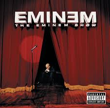

Composição: Eminem / Steven King / Jeff Bass.
SUPERMAN
LETRA DA MÚSICA
You high, baby?
Yeah
Yeah?
Talk to me
You want me to tell you something?
Uh, huh
I know what you wanna hear
I know you want me, baby
I think I want you too
(I think I love you, baby)
I think I love you too
I'm here to save you, girl
Come be in Shady's world
I wanna grow together
Let's let our love unfurl
You know you want me, baby
You know I want you too
They call me Superman
I'm here to rescue you
I wanna save you, girl
Come be in Shady's world
(Oh, boy, you drive me crazy)
Bitch, you make me hurl
They call me Superman
Leap tall hoes in a single bound
I'm single now, got no ring on this finger now
I'll never let another chick bring me down
In a relationship, save it, bitch!
Babysit? You make me sick
Superman ain't savin' shit
Girl, you can jump on Shady's dick
Straight from the hip, cut to the chase
I'll tell a motherfuckin' slut to her face
Play no games, say no names
Ever since I broke up with what's-her-face
I'm a different man, kiss my ass
Kiss my lips, bitch, why ask?
Kiss my dick, hit my cash
I'd rather have you whip my ass
Don't put out? I'll put you out
Won't get out? I'll push you out
Puss blew out, poppin' shit
Wouldn't piss on fire to put you out
Am I too nice? Buy you ice?
Bitch, if you died, wouldn't buy you life
What? You tryin' to be my new wife?
What? You Mariah? Fly through twice
But I do know one thing though
Bitches, they come, they go
Saturday through Sunday, Monday
Monday through Sunday, yo
Maybe I'll love you one day
Maybe we'll someday grow
'Til then just sit your drunk ass
On that fuckin' runway, ho'
I can't be your Superman
Can't be your Superman
Can't be your Superman
Can't be your Superman
I can't be your Superman
Can't be your Superman
Can't be your Superman
Your Superman, your Superman
Don't get me wrong, I love these hoes
It's no secret, everybody knows
Yeah, we fucked, bitch, so what?
That's about as far as your buddy goes
We'll be friends, I'll call you again
I'll chase you around every bar you attend
Never know what kinda car I'll be in
We'll see how much you'll be partyin' then
You don't want that, neither do I
I don't wanna flip when I see you with guys
Too much pride between you and I
Not a jealous man, but females lie
But I guess that's just what sluts do
How could it ever be just us two?
I'd never love you enough to trust you
We just met and I just fucked you
But I do know one thing though
Bitches, they come, they go
Saturday through Sunday, Monday
Monday through Sunday, yo
Maybe I'll love you one day
Maybe we'll someday grow
'Til then just sit your drunk ass
On that fuckin' runway, ho'
I know you want me, baby
I think I want you too
(I think I love you, baby)
I think I love you too
I'm here to save you, girl
Come be in Shady's world
I wanna grow together
Let's let our love unfurl
You know you want me, baby
You know I want you too
They call me Superman
I'm here to rescue you
I wanna save you, girl
Come be in Shady's world
(Oh boy, you drive me crazy)
Bitch, you make me hurl
First thing you say: I'm not fazed
I hang around big stars all day
I don't see what the big deal is anyway
You're just plain old Marshall to me
Oh, yeah, girl, run that game
Hailie Jade, I love that name
Love that tattoo, what's that say?
Rot In Pieces, uh, that's great
First off, you don't know Marshall
At all, so don't grow partial
That's ammo for my arsenal
I'll slap you off that bar stool
There goes another lawsuit
Leave handprints all across you
Good Lordy, whoadie
You must be gone off that water bottle
You want what you can't have
Oh, girl, that's too damn bad
Don't touch what you can't grab
End up with two backhands
Put anthrax on a Tampax
And slap you 'til you can't stand
Girl, you just blew your chance
Don't mean to ruin your plans
But I do know one thing though
Bitches, they come, they go
Saturday through Sunday, Monday
Monday through Sunday, yo
Maybe I'll love you one day
Maybe we'll someday grow
'Til then just sit your drunk ass
On that fuckin' runway, ho'
I know you want me, baby
I think I want you too
(I think I love you, baby)
I think I love you too
I'm here to save you, girl
Come be in Shady's world
I wanna grow together
Let's let our love unfurl
You know you want me, baby
You know I want you too
They call me Superman
I'm here to rescue you
I wanna save you, girl
Come be in Shady's world
(Oh boy, you drive me crazy)
Bitch, you make me hurl
I can't be your Superman
Can't be your Superman
Can't be your Superman
Can't be your Superman
I can't be your Superman
Can't be your Superman
Can't be your Superman
Your Superman, your Superman
I can't be your Superman
Can't be your Superman
Can't be your Superman
Can't be your Superman
I can't be your Superman
Can't be your Superman
Can't be your Superman
Your Superman, your Superman
SIGNIFICADO DA LETRA
A música 'Superman', do rapper Eminem, com participação de Dina Rae, é uma faixa que explora as complexidades e frustrações das relações amorosas modernas, especialmente sob a perspectiva de uma celebridade. Eminem, conhecido por suas letras cruas e honestas, utiliza a metáfora do Superman para descrever a si mesmo como um homem desejado pelas mulheres, mas que, ao mesmo tempo, é incapaz de se comprometer ou se envolver emocionalmente de forma profunda.
No decorrer da música, Eminem alterna entre momentos de aparente vulnerabilidade, onde ele expressa um desejo de amor e conexão ('I think I love you too'), e momentos de agressividade e desdém pelas mulheres que ele acredita estarem interessadas nele apenas por sua fama ('Bitch, you make me hurl'). A repetição do refrão 'I can't be your Superman' reforça a ideia de que, apesar de ser visto como um herói ou salvador pelas mulheres, ele se recusa a assumir esse papel em suas relações amorosas.
A música também aborda temas como a promiscuidade, a desconfiança e a superficialidade nas interações entre homens e mulheres. Eminem critica a ideia de que as mulheres querem 'salvadores' e, ao mesmo tempo, expressa sua própria incapacidade de confiar e se entregar a um relacionamento ('I'd never love you enough to trust you'). A canção reflete a visão cínica do artista sobre o amor e os relacionamentos, uma visão que é frequentemente amplificada pela sua experiência como uma figura pública sujeita ao escrutínio e às expectativas do público e da mídia.